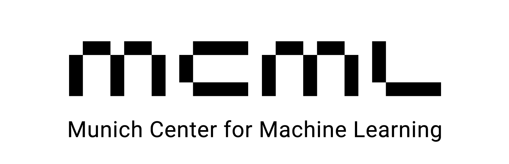
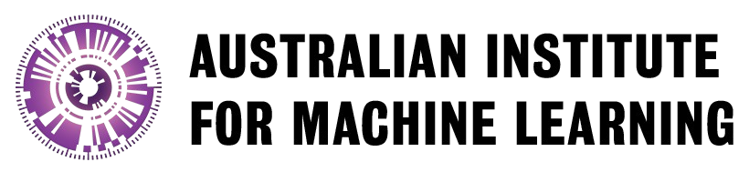

Why This Matters
"We have entered the era of the Third Domain in healthcare. Patients are no longer just visiting doctors or reading public health pamphlets—they are conversing with AI."
This new interaction happens in a digital wild west. When a user asks an LLM about symptoms or lifestyle, they aren't just searching—they are seeking care. Yet, these systems currently operate without the safety rails of clinical medicine or the oversight of public health.
COMPASS-GH is drawing the map. We are uniting global experts to define the first safety standards for General Health AI, ensuring that accessible health advice is not just confident, but competent, safe, and equitable.
Health
Medicine
Health Query
Public Health
Population-level policies and epidemiology. Focusing on aggregate statistics and community wellness.
General Health Query
The vast, unmediated space where individuals seek AI guidance for medical literacy and lifestyle. It sits at the crossroad—requiring the accuracy of clinical medicine and the safety of public health, yet demanding a unique set of "soft skills" like empathy and cultural awareness.
Clinical Medicine
Specialized diagnosis and treatment protocols. Focusing on rigid binary outcomes and expert intervention.
Roadmap Plan
A structured, multidisciplinary approach to building the global consensus for safe General Health AI.
Participant Recruitment
We are recruiting a radically multidisciplinary coalition to move beyond academic silos and ensure standards reflect real-world needs.
Consensus Building
Using the Delphi Method to achieve agreement through sequential questionnaires and focus groups.
- Priority Topics: Identifying the most critical health questions people ask AI.
- Dataset Gaps: Detecting bias and missing demographics in current training data.
- New Metrics: Defining "soft skills" like empathy, persuasion, and safety.
Standards & Benchmarks
The final output will be a public "Catalogue of Priority Benchmarks" and a "Core Evaluation Framework" serving as the industry standard.
Public Catalogue
Open-access library of critical benchmark tasks.
Evaluation Framework
Standardized scoring for safety & empathy.
Join the Initiative
We invite clinicians, researchers, model developers, and policymakers to define the standards for safe, accurate, and equitable General Health AI. Contribute data, proposals, and expertise to ensure future tools are rigorously validated.

Munich, Germany
Adelaide, Australia